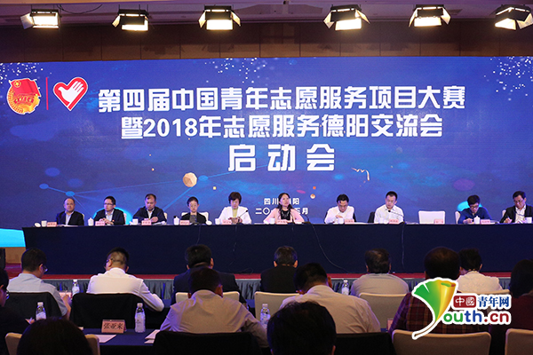
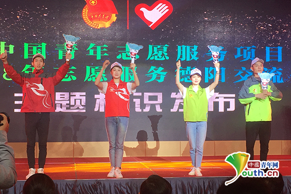

第四届中国青年志愿服务项目大赛暨2018年志愿服务交流会启动
桂电志愿者网 日期：2018-05-10 来源：新华网

第四届中国青年志愿服务项目大赛暨2018志愿服务交流会启动会现场。中国青年网记者 宋晨摄
中国青年网德阳5月10日电(记者 宋晨 实习记者 姜思琪)5月10日上午，由共青团中央、中央文明办、民政部、水利部、中国残联、国家卫生健康委员会、中国志愿服务联合会联合中共四川省委、四川省人民政府、中共德阳市委、德阳市人民政府共同举办的第四届中国青年志愿服务项目大赛暨2018年志愿服务交流会在德阳启动。
团中央书记处书记、赛会全国组委会主任尹冬梅在启动会上讲话，要求各级共青团、志愿服务组织和赛会组织单位，要以习近平新时代中国特色社会主义思想为指导，聚焦十九大对志愿服务的新要求，贯彻共青团改革再出发总体部署，提升赛会专业化科学化制度化水平能力，把赛会办成牵动全国志愿服务创新发展、示范引领、协同发展的综合性工作平台。团中央青年志愿者行动指导中心主任张朝晖代表赛会组委会秘书处对今年工作进行了部署。德阳市委副书记何礼作了致辞，德阳市政协副主席吴玉华介绍了德阳筹备情况。水利部、国家卫生健康委员会有关同志就各自领域对赛会提出了要求。
会议指出，今年的赛会要着力改革，坚持以改革促发展，以发展强事业。着力制度建设，坚持以制度促规范，以规范保证公平公正。着力项目培育，坚持以项目促组织，以组织孵化增强枢纽作用。着力文化引领，坚持以文化强影响，以文化导向引领事业发展。
会议提出，要准确把握今年赛会的整体要求，要在赛会的筹办全过程注重把学习贯彻习近平新时代中国特色社会主义思想和十九大精神放在首要位置。要把握工作导向，赛会举办要为青年志愿者事业的发展服务，为共青团深化改革服务，为加强党联系青年、服务青年、引导青年服务。要加强工作力度，切实做到工作信号不弱，工作力度不减，整体工作只能增强，不能减弱。要加强赛会牵引，争取党委政府将赛会列入工作清单，取得有关部门的支持，积极发动基金会、爱心企业等多方参与共商共筹共建。要发挥好赛会平台作用，通过汇聚好项目、组织、资源、文化，探索总结更多可复制、可推广的工作经验，助推志愿服务做大做优。
会议要求，各省级赛会单位要组织好地方赛会，激发基层活力，为构建全国、省、市、基层项目赛体系打牢基础。要抓好资源对接，各地要按照“社会动员、各方参与、资源联动”的工作思路，面向社会公开征集项目合作伙伴，通过共建共享、合作发展等方式，充分调动社会各方资源的积极性。要注重赛会氛围营造，主动与社会资源对接，主动服务志愿者、志愿服务组织和项目，营造多方关注、合力支持的赛会氛围。要做好跟踪培育，各级赛会单位持续跟踪获奖项目，分层级为获奖项目的团队和组织提供政策咨询、项目优化、宣传推广、资源整合、组织管理、骨干培养等专业指导。要把握好工作节奏，各地要利用有利条件，在启动工作会后尽快部署，形成有利于赛会开展的良好氛围。

第四届中国青年志愿服务项目大赛暨2018志愿服务交流会启动会现场发布2018年志交会赛会标识、吉祥物、志愿者服装等。中国青年网实习记者 姜思琪摄
宁夏团区委、日照团市委、厦门大学等单位分别代表省、市、高校作了交流发言。会上，发布了2018年志交会赛会标识、吉祥物、志愿者服装等。来自各主承办单位、全国37个省级赛会单位、四川省和德阳市有关部门、部分高校的代表共约80余人参加会议。
【责任编辑：李彦龙】